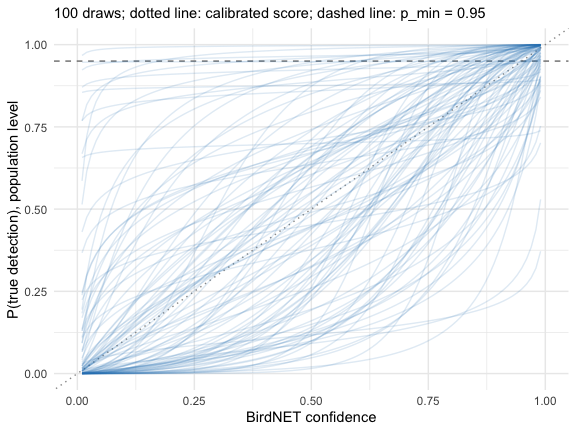
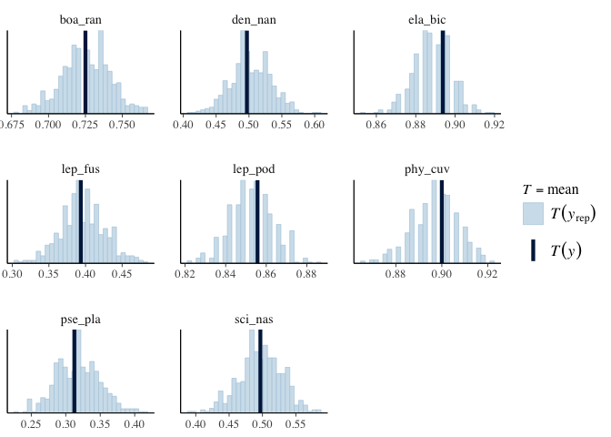
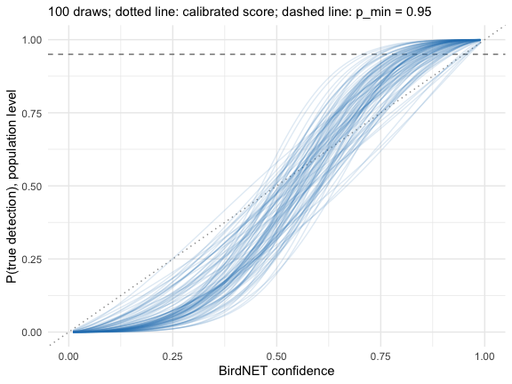
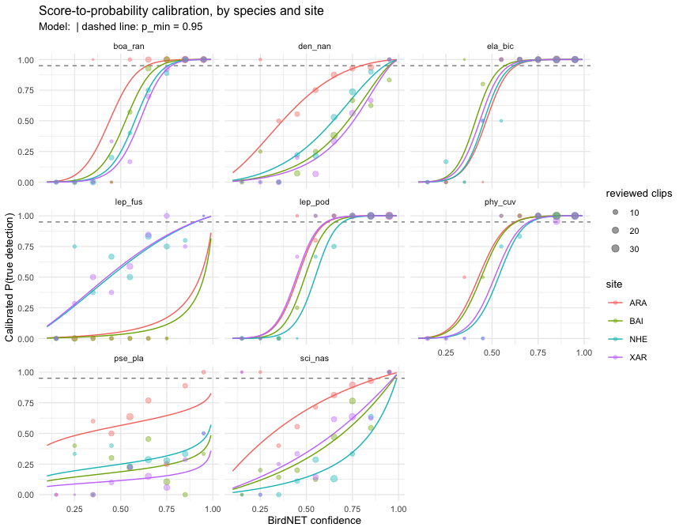
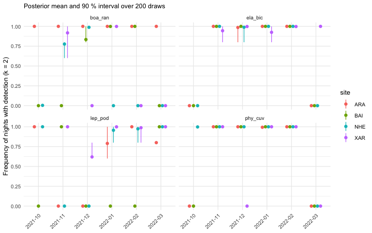

The calibration of vignette("calibration") fits the
candidate models by maximum likelihood with ‘lme4’. sheepdog can also
fit the selected model in a Bayesian framework with ‘brms’. This gives
three things the maximum likelihood fit does not:
- the uncertainty of the calibrated probability of every detection,
and a rule that uses it (“is P(TP) >=
p_minwith high posterior probability?”) instead of a point estimate; - priors that regularise the variance components, which avoids the singular fits that ‘lme4’ gives when a correlation or a variance is estimated at the boundary;
- the propagation of the calibration uncertainty to the detection histories and the community matrices.
The cost is computing time and the need to state, and check, a prior. The workflow below follows the steps of a Bayesian workflow: prior predictive check, fit, convergence diagnostics, posterior predictive check and sensitivity to the prior (Gelman et al. 2026; McElreath 2020).
library(sheepdog)
suppressPackageStartupMessages(library(dplyr))
ex <- system.file("extdata", "example", package = "sheepdog")
val_files <- list.files(file.path(ex, "validation"), full.names = TRUE)
val <- suppressMessages(read_validations(val_files))The model
We use the model retained by the log-loss rule in
vignette("calibration"): species slopes and intercepts
without their correlation, and site x species intercepts.
f <- calibration_models(uncorrelated = TRUE)$m5_species_x_site_uncorrelated
f
#> tp ~ logit_conf + (1 | species) + (0 + logit_conf | species) +
#> (1 | site:species)
#> <environment: 0x7725e09658>The prior
fit_calibration(engine = "brms") requires the prior to
be given explicitly: ‘brms’ would otherwise use flat priors on the
slopes. calibration_prior() builds a weakly informative
example centred on the hypothesis that the BirdNET score is already
calibrated, P(TP) = score. The data then show how far the classifier
departs from it.
prior <- calibration_prior(f, val)
prior
#> prior class coef group resp dpar nlpar lb ub tag source
#> normal(0.913, 1.5) Intercept <NA> <NA> user
#> normal(1, 1) b 0 <NA> user
#> exponential(1) sd <NA> <NA> user- The slope of
logit_confis centred on 1 (a calibrated score), with a standard deviation of 1, and truncated at 0: a higher score never lowers P(TP). - ‘brms’ centres the predictors, so the intercept is the logit of P(TP) at the mean logit score of the reviewed clips (0.913); centring its prior on that value makes slope 1 and intercept equal to the mean correspond to P(TP) = score.
- The standard deviations of the species and site x species effects
get
exponential(1), most of whose mass lies on moderate differences on the logit scale.
Prior predictive check
Before fitting, sample the model from the prior alone and look at the
calibration curves it implies on the probability scale.
plot_calibration_draws() draws the population-level curve
of 100 draws:
prior_fit <- prior_predictive_calibration(
f, val, prior, chains = 2, iter = 1000, refresh = 0, silent = 2,
backend = "cmdstanr", seed = 2026)
#> Carregando namespace exigido: rstan
plot_calibration_draws(prior_fit)
The prior allows curves well above and well below the diagonal (a
calibrated score), all increasing; it rules out nothing a reviewer would
consider plausible, and it does not force the curves to cross
p_min at any particular score.
Fitting
fit <- fit_calibration(val, f, engine = "brms", prior = prior,
chains = 4, cores = 4, iter = 2000,
control = list(adapt_delta = 0.95),
refresh = 0, silent = 2, backend = "cmdstanr",
seed = 2026)fit_calibration() runs
calibration_diagnostics() after the fit and warns when the
largest R-hat exceeds 1.01, the bulk or tail effective sample sizes fall
below 400, or there are divergent transitions:
calibration_diagnostics(fit)
#> # A tibble: 1 × 5
#> max_rhat min_ess_bulk min_ess_tail n_divergent ok
#> <dbl> <dbl> <dbl> <int> <lgl>
#> 1 1.01 788. 1450. 0 TRUEA higher adapt_delta (here 0.95) is the first remedy for
divergent transitions; persistent divergences point to a model that the
data cannot identify.
summary(fit)$fixed
#> Estimate Est.Error l-95% CI u-95% CI Rhat Bulk_ESS Tail_ESS
#> Intercept -0.391735 0.3658406 -1.1143408 0.3468419 1.000501 2388.154 2612.636
#> logit_conf 2.093138 0.5675039 0.9230704 3.1608814 1.003420 1280.111 1747.844Posterior predictive check
The observed proportion of true positives by species should fall within the distribution of the proportions replicated from the posterior:
brms::pp_check(fit, type = "stat_grouped", group = "species",
stat = "mean", ndraws = 500)
Sensitivity to the prior
calibration_sensitivity() runs the power-scaling
analysis of ‘priorsense’ (Kallioinen et al. 2024): it measures how much
each population-level parameter and each standard deviation changes when
the prior or the likelihood is up- or down-weighted.
sens <- calibration_sensitivity(fit)
sens
#> Sensitivity based on cjs_dist
#> Prior selection: all priors
#> Likelihood selection: all data
#>
#> variable prior likelihood
#> b_Intercept 0.030 0.024
#> b_logit_conf 0.119 0.039
#> sd_site:species__Intercept 0.055 0.157
#> sd_species__Intercept 0.112 0.076
#> sd_species__logit_conf 0.126 0.048
#> diagnosis
#> -
#> potential strong prior / weak likelihood
#> potential prior-likelihood conflict
#> potential prior-likelihood conflict
#> potential strong prior / weak likelihoodA parameter sensitive to the prior but not to the likelihood (“strong
prior / weak likelihood”) is mostly determined by the prior; one
sensitive to both (“prior-likelihood conflict”) is pulled in different
directions by the prior and the data. Here the flagged standard
deviations are sd_site:species__Intercept, sd_species__Intercept,
sd_species__logit_conf, and the flagged population-level parameters are
b_logit_conf. The standard deviations of the species effects, and the
population slope (the mean of the species slopes), are estimated from
only 8 species, so their prior matters. Two things follow. Report the
prior together with the results. And check that the conclusions (the
calibrated probabilities near p_min, the detection
histories) do not change under a wider prior, for instance
normal(1, 2) on the slope: with ‘priorsense’ this is what
the power-scaling approximates without refitting. With more species, the
likelihood takes over and the flags disappear.
Posterior calibration curves

The population-level curves are steeper than the diagonal (posterior
mean slope 2.09, 95 % interval 0.92 to 3.16): in the example, low scores
overestimate P(TP) and high scores underestimate it. The curves by
species and site, with the observed precision by score bin, are drawn by
plot_calibration() as for the ‘lme4’ fit:
plot_calibration(fit, val)
Scoring the detections
score_detections() computes the posterior of P(TP) once
on a grid of scores (step 0.01) for each site x species, and assigns it
to the detections by their rounded score; the cost does not depend on
the number of detections. Each detection gets the posterior mean
(p_tp), a lower quantile (p_tp_lower, 5 % by
default) and the posterior probability that P(TP) >=
p_min (pr_reliable):
sites <- c("ARA", "BAI", "NHE", "XAR")
tables <- setNames(file.path(ex, "birdnet", sites,
"BirdNET_SelectionTable.txt"), sites)
scored <- suppressMessages(score_detections(tables, fit, p_min = 0.95))
scored |>
select(site, species, confidence, p_tp, p_tp_lower, pr_reliable) |>
arrange(desc(confidence)) |>
head()
#> # A tibble: 6 × 6
#> site species confidence p_tp p_tp_lower pr_reliable
#> <chr> <chr> <dbl> <dbl> <dbl> <dbl>
#> 1 NHE phy_cuv 0.995 1.000 1.000 1
#> 2 NHE lep_pod 0.993 1.000 1.000 1
#> 3 XAR lep_pod 0.993 1.000 1.000 1
#> 4 NHE ela_bic 0.992 1.000 1.000 1
#> 5 ARA boa_ran 0.991 1.000 1.000 1
#> 6 ARA lep_pod 0.991 1.000 1.000 1Two rules for a reliable detection
detection_history() can count a detection as reliable
when its posterior mean reaches p_min
(rule = "mean", as with ‘lme4’) or when the posterior
probability that P(TP) >= p_min reaches
prob_min (rule = "probability"):
h_mean <- detection_history(scored, p_min = 0.95)
h_prob <- detection_history(scored, p_min = 0.95, rule = "probability",
prob_min = 0.9)
tibble(rule = c("mean", "probability"),
nights_k1 = c(sum(h_mean$detection_k1), sum(h_prob$detection_k1)),
nights_k2 = c(sum(h_mean$detection_k2), sum(h_prob$detection_k2)))
#> # A tibble: 2 × 3
#> rule nights_k1 nights_k2
#> <chr> <int> <int>
#> 1 mean 357 322
#> 2 probability 339 306The probability rule is more conservative where the calibration is
uncertain, typically in cells with few reviewed clips, because it asks
that the calibrated probability exceed p_min with high
posterior probability rather than on average.
inner_join(count(h_mean, species, wt = detection_k1, name = "mean"),
count(h_prob, species, wt = detection_k1, name = "probability"),
by = "species")
#> # A tibble: 8 × 3
#> species mean probability
#> <chr> <int> <int>
#> 1 boa_ran 68 68
#> 2 den_nan 30 21
#> 3 ela_bic 85 85
#> 4 lep_fus 3 0
#> 5 lep_pod 78 78
#> 6 phy_cuv 81 81
#> 7 pse_pla 0 0
#> 8 sci_nas 12 6Propagating the uncertainty to the community matrices
Both rules still produce a single history.
history_draws() rebuilds the history for each of
n_draws posterior draws: in a draw, a detection is reliable
when its probability in that draw is >= p_min. The cost
is again independent of the number of detections.
hd <- history_draws(fit, scored, p_min = 0.95, n_draws = 200)
hd
#> # A tibble: 174,400 × 10
#> draw site species night n_detections n_reliable detection_k1 detection_k2
#> <int> <chr> <chr> <chr> <int> <int> <int> <int>
#> 1 33 ARA boa_ran 202110… 10 2 1 1
#> 2 33 ARA boa_ran 202110… 13 9 1 1
#> 3 33 ARA boa_ran 202110… 16 10 1 1
#> 4 33 ARA boa_ran 202110… 11 5 1 1
#> 5 33 ARA boa_ran 202110… 8 3 1 1
#> 6 33 ARA boa_ran 202111… 13 9 1 1
#> 7 33 ARA boa_ran 202111… 9 5 1 1
#> 8 33 ARA boa_ran 202111… 11 4 1 1
#> 9 33 ARA boa_ran 202111… 12 7 1 1
#> 10 33 ARA boa_ran 202111… 7 3 1 1
#> # ℹ 174,390 more rows
#> # ℹ 2 more variables: detection_k3 <int>, detection <int>community_matrices_draws() builds the community matrices
of community_matrices() for each draw and summarises each
site x month x species frequency by its posterior mean and a 90 %
interval:
core <- c("boa_ran", "ela_bic", "lep_pod", "phy_cuv")
md <- community_matrices_draws(hd, core, k_min = 2, min_nights_month = 5)
md$summary |>
mutate(width = frequency_upper - frequency_lower) |>
arrange(desc(width)) |>
head()
#> # A tibble: 6 × 8
#> site month species n_nights_recorded frequency_mean frequency_lower
#> <chr> <chr> <chr> <int> <dbl> <dbl>
#> 1 ARA 2022-01 lep_pod 5 0.79 0.6
#> 2 XAR 2021-11 boa_ran 5 0.918 0.6
#> 3 NHE 2021-11 boa_ran 5 0.777 0.6
#> 4 XAR 2021-12 lep_pod 5 0.62 0.6
#> 5 ARA 2021-12 ela_bic 5 0.986 0.8
#> 6 BAI 2021-12 boa_ran 5 0.834 0.8
#> # ℹ 2 more variables: frequency_upper <dbl>, width <dbl>12 of the 92 site x month x species cells have a frequency that
changes among draws; the others are fixed because their detections are
far above or below p_min in every draw.
library(ggplot2)
ggplot(md$summary, aes(month, frequency_mean, colour = site, group = site)) +
geom_pointrange(aes(ymin = frequency_lower, ymax = frequency_upper),
position = position_dodge(width = 0.5), size = 0.3) +
facet_wrap(~ species) +
labs(x = NULL, y = "Frequency of nights with detection (k = 2)",
subtitle = "Posterior mean and 90 % interval over 200 draws") +
theme_minimal(base_size = 10) +
theme(axis.text.x = element_text(angle = 45, hjust = 1))
md$draws keeps the frequency of every draw, so that a
downstream analysis (an ordination, a GLLVM; see
vignette("community-matrices")) can be repeated on each
draw and its results summarised over draws.
The calibrate() wrapper
calibrate() takes the same options. The comparison of
the candidate models still uses maximum likelihood, which is fast; the
selected model is then refitted with ‘brms’. Passing
prior = calibration_prior (the function) builds the example
prior for whichever model is selected:
res <- calibrate(val_files, tables, output_dir = "calibration",
select = "one_se_logloss", uncorrelated = TRUE,
engine = "brms", prior = calibration_prior,
brms_args = list(chains = 4, cores = 4,
control = list(adapt_delta = 0.95),
backend = "cmdstanr"),
rule = "probability", prob_min = 0.9)calibrate() then also writes
calibration_diagnostics.csv.
References
Gelman, A., Vehtari, A., McElreath, R., Simpson, D., Margossian, C. C., Yao, Y., Kennedy, L., Gabry, J., Bürkner, P.-C., Modrák, M., & Leos Barajas, V. (2026). Bayesian Workflow. Chapman & Hall. https://avehtari.github.io/Bayesian-Workflow/
Kallioinen, N., Paananen, T., Bürkner, P.-C., & Vehtari, A. (2024). Detecting and diagnosing prior and likelihood sensitivity with power-scaling. Statistics and Computing, 34, 57. https://doi.org/10.1007/s11222-023-10366-5
McElreath, R. (2020). Statistical Rethinking: A Bayesian Course with Examples in R and Stan (2nd ed.). Chapman and Hall/CRC. https://doi.org/10.1201/9780429029608